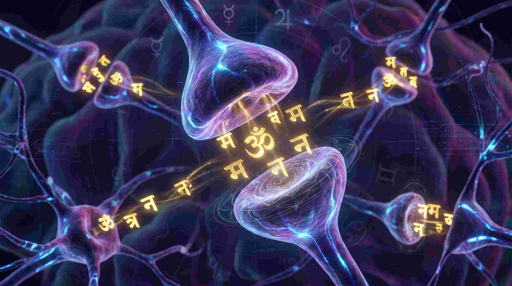
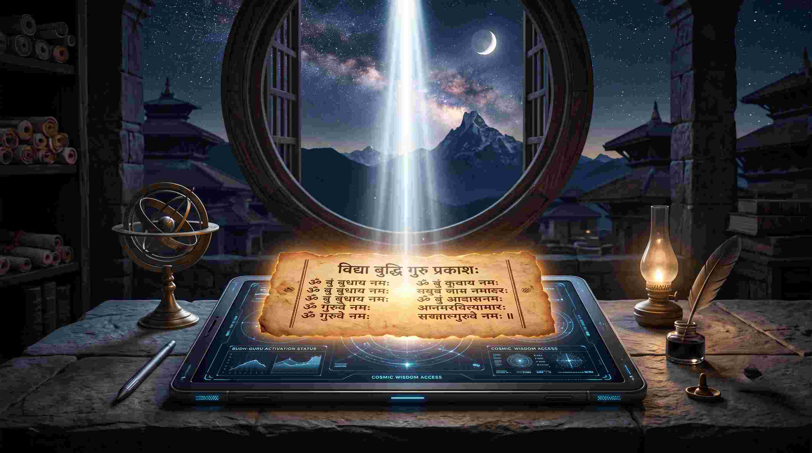

आज के डिजिटल युग में हमारा ध्यान (Attention Span) बहुत कम हो गया है — हम चीजें भूल जाते हैं और पढ़ते समय फोकस नहीं कर पाते। ऐसे समय में हमारे ऋषियों की बताई मेधा सूक्त की प्रार्थना विद्यार्थियों के लिए विशेष महत्व रखती है।
मेधा सूक्त (Medha Suktam) माँ सरस्वती और मेधा देवी से बुद्धि, स्मरण शक्ति और विद्या की प्रार्थना है। आइए इसके मंत्र, उनका अर्थ और विद्यार्थियों के लिए पाठ की सही विधि समझते हैं।
"मेधा (Medha) केवल 'ज्ञान' नहीं है। ज्ञान तो गूगल पर भी है। मेधा का अर्थ है 'रिटेंशन' (Retention)—ज्ञान को धारण करने, समझने और सही समय पर उसे याद करने की क्षमता।"

सम्पूर्ण मेधा सूक्त (मूल संस्कृत पाठ और गहरा भावार्थ)
महान वेदों से लिया गया यह सूक्त मेधा देवी (सरस्वती का बुद्धिमत्ता स्वरूप) का आह्वान करता है। आइए इसे अर्थ सहित समझते हैं:
ॐ यश्छन्दसामृषभो विश्वरूपः ।
छन्दोभ्योऽध्यमृताथ्संबभूव ।
स मेन्द्रो मेधया स्पृणोतु ।
अमृतस्य देव धारणो भूयासम् ।
भावार्थ: हे परमेश्वर! आप समस्त वेदमंत्रों के अधिपति और विश्वव्यापी हैं। आप ही वह अमृतस्वरूप हैं, जिनसे ज्ञान की धारा प्रवाहित होती है। हे इन्द्रदेव! मेरी बुद्धि को 'मेधा' (तेजस्विता, विवेक और स्मरणशक्ति) से परिपूर्ण कीजिए। मुझे उस अमृत-ज्ञान का धारक बनाइए जो देवताओं को भी दुर्लभ है।
शरीरं मे विचर्षणम् ।
जिह्वा मे मधुमत्तमा ।
कर्णाभ्यां भूरिविश्रुवम् ।
ब्रह्मणः कोशोऽसि मेधया पिहितः ।
श्रुतं मे गोपाय । ॐ शान्तिः शान्तिः शान्तिः ॥
भावार्थ: मेरा शरीर स्वस्थ और कर्मशील बने। मेरी जिह्वा सदैव मधुर और प्रभावशील वचन बोले। मेरे कान शुभ और ज्ञानमय वचन सुनें। हे प्रभु, मेरी चेतना ब्रह्म का कोष बने जो मेधा से सुरक्षित हो। मैं जो भी सुनूं या सीखूं, वह मेरी स्मृति (Memory) में हमेशा सुरक्षित रहे। तीनों लोकों में शांति हो।
ॐ मेधादेवी जुषमाणा न आगाद्विश्वाची भद्रा सुमनस्यमाना ।
त्वया जुष्टा नुदमाना दुरुक्तान् बृहद्वदेम विदथे सुवीराः ।
भावार्थ: हे मेधादेवी! आप सर्वव्यापी, कल्याणमयी और शुभ विचारों से युक्त हैं। आप कृपापूर्वक मेरे भीतर पधारें। आपकी कृपा से मेरे मन के नकारात्मक (Negative) विचार नष्ट हों, और मैं सभा तथा अध्ययन में तेज और आत्मविश्वास के साथ बोल सकूं।
त्वया जुष्ट ऋषिर्भवति देवि त्वया ब्रह्मागतश्रीरुत त्वया ।
त्वया जुष्टश्चित्रं विन्दते वसु सानो जुषस्व द्रविणो न मेधे ॥
भावार्थ: आपकी कृपा से ही कोई साधारण व्यक्ति ऋषि बन जाता है। आपकी कृपा से ही ब्रह्मज्ञान और भौतिक समृद्धि प्राप्त होती है। आपकी अनुकंपा से मनुष्य बुद्धिमान् और यशस्वी बनता है। हे देवी! कृपया मुझे भी ऐसा दिव्य ज्ञान और बुद्धि प्रदान करें।
मेधां म इन्द्रो ददातु मेधां देवी सरस्वती ।
मेधां मे अश्विनावुभावाधत्तां पुष्करस्रजा ।
भावार्थ: हे इन्द्रदेव! मुझे ज्ञान और मेधा दें। हे देवी सरस्वती! मुझे स्मरणशक्ति और मधुर वाणी का वरदान दें। कमल की मालाओं से विभूषित हे अश्विनीकुमारों! आप दोनों मुझे कुशाग्र बुद्धि (Sharp Intellect) और दिव्य तेज प्रदान करें।
अप्सरासु च या मेधा गन्धर्वेषु च यन्मनः ।
दैवीं मेधा सरस्वती सा मां मेधा सुरभिर्जुषता स्वाहा ॥
भावार्थ: अप्सराओं में जो मेधा है, गंधर्वों में जो सूक्ष्म और कलात्मक मन है, वही दैवी मेधा (सरस्वती स्वरूपा) मुझे प्राप्त हो। हे सुरभि रूपा मेधादेवी! मुझ पर प्रसन्न हों, यह आहुति (स्वाहा) आपको समर्पित है।
आमां मेधा सुरभिर्विश्वरूपा हिरण्यवर्णा जगती जगम्या ।
ऊर्जस्वती पयसा पिन्वमाना सा मां मेधा सुप्रतीका जुषन्ताम् ।
भावार्थ: वह मेधादेवी जो सुगंधमयी, विश्वरूपा, स्वर्णवर्णा और सब लोकों में विचरण करने वाली है। जो ऊर्जा (Energy) से भरी और अमृतरस से सिंचित है, वह मेधा मुझ पर प्रसन्न हों और मेरे मन को सामर्थ्यवान बनाएं।
मयि मेधां मयि प्रजां मय्यग्निस्तेजो दधातु ।
मयि मेधां मयि प्रजां मयीन्द्र इन्द्रियं दधातु ।
मयि मेधां मयि प्रजां मयि सूर्यो भ्राजो दधातु ।
भावार्थ: अग्निदेव मेरे भीतर तेज और मेधा का संचार करें। इन्द्रदेव मेरी इन्द्रियों (Senses) में शक्ति और स्थिरता प्रदान करें। सूर्यदेव मुझमें प्रकाश, बुद्धि और ओज (तेज) प्रदान करें। मेरी बुद्धि सदैव प्रकाशित रहे।
ॐ महादेव्यै च विद्महे ब्रह्मपत्न्यै च धीमहि । तन्नो वाणी प्रचोदयात् ।
ॐ हंसहंसाय विद्महे परमहंसाय धीमहि । तन्नो हंसः प्रचोदयात् ।
ॐ शान्तिः शान्तिः शान्तिः ॥
भावार्थ: हम महादेवी, ब्रह्मपत्नी सरस्वती का ध्यान करते हैं। वह वाणी की देवी हमारी बुद्धि को प्रेरणा दें। हम उस परम हंस (ब्रह्मस्वरूप साक्षी) का ध्यान करते हैं। वह हमें सत्य और आत्मज्ञान की ओर प्रेरित करे। शरीर, मन और आत्मा में पूर्ण शांति हो।

निष्कर्ष: विद्या और विवेक की प्रार्थना
हम मोबाइल और कंप्यूटर को तो समय-समय पर अपडेट करते रहते हैं, लेकिन अपने मन और एकाग्रता पर ध्यान नहीं देते।
प्रतिदिन सुबह पूर्व या उत्तर दिशा की ओर मुख करके, सीधे बैठकर इस सूक्त का एक बार सस्वर पाठ करें। नियमित पाठ, अच्छी नींद और मन लगाकर पढ़ाई — इन तीनों के साथ आप अपनी एकाग्रता और आत्मविश्वास में बदलाव महसूस करेंगे।